WEEK 5 (22 February 2017)
[3D Scanning and Printing]
This week The 3D scanning and printing assignment is to test the designs rules for your printer(s) (group project).
Design and 3D print a small object that could not be substractively.
3D scan and object (optionally print it).
First Step: Testing Design Rules In Fablab Aldeias do Xisto, we have the Witbox, the Fortus 250, the zmorph 3D and two Prusa i3. To send the prints to the printers we used Cura, which is an open source 3D printing software application. Once we have 4 different 3D printers in the Fab Lab, and we are 4 students in fabacademy we have decided to the group project, to test a piece in each diferent 3D printer and compare the results. I chose the the zmorph 3D to make the test, and the piece that was about to be tested was designed by my colleague João Milheiro - printest.STL
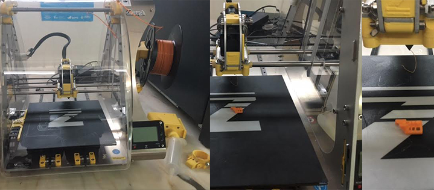
First step: Download Voxelizer which Is the best program to print with Zmorth, after that I copied the file to the Voxelizer and tested de settings to print the piece.
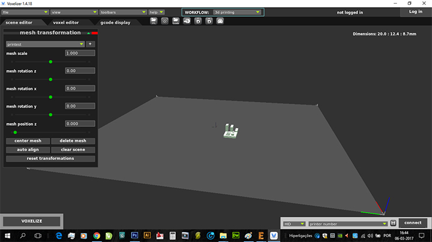
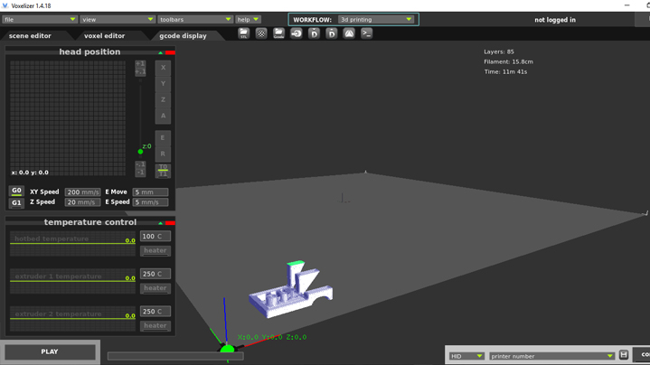
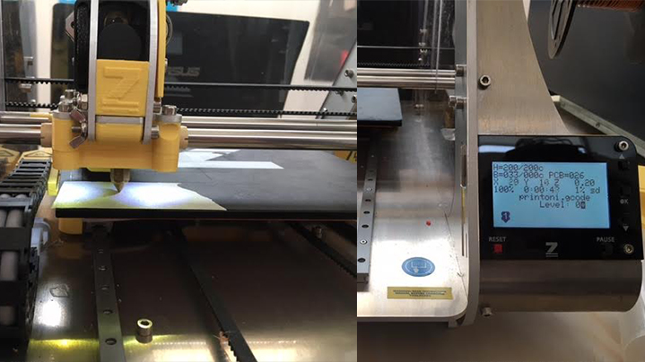
I made several tests by changing the settings, the first two impressions did not run very well they took about 15 min each, and adjustements were done on the retraction values in order to get a good quality print.
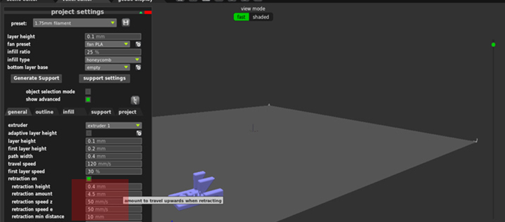
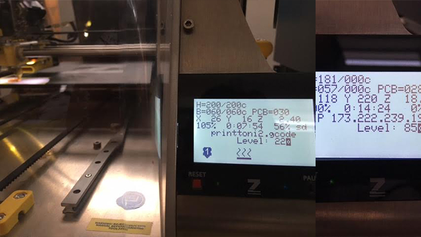
In the final, on the image bellow it can be seen the improvement of the 3D printing:
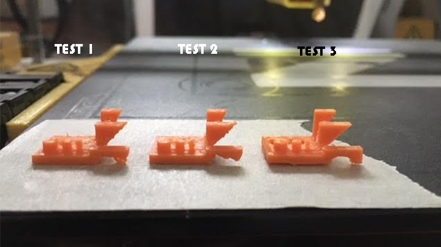
After that I printed a test piece to my final project Cat Feeder and I chose another 3D printer, the Prusa i3 using PLA. The result was not good as can be seen below.
I'm drawing the piece (a drill bit to my final project) with Rhino, this continues to be my favorite tool.
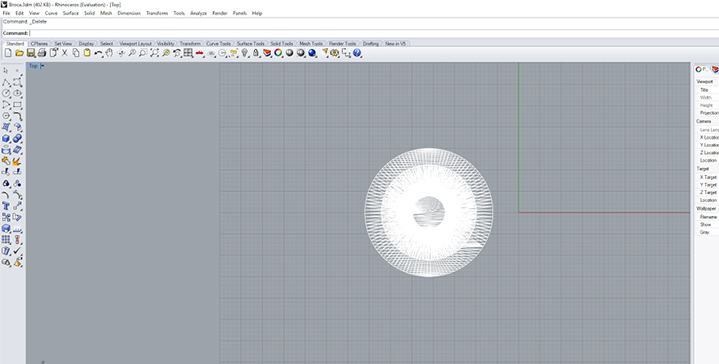
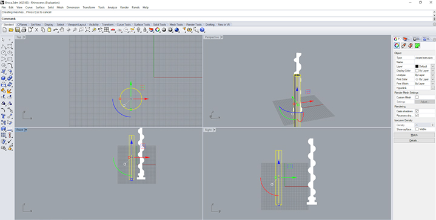
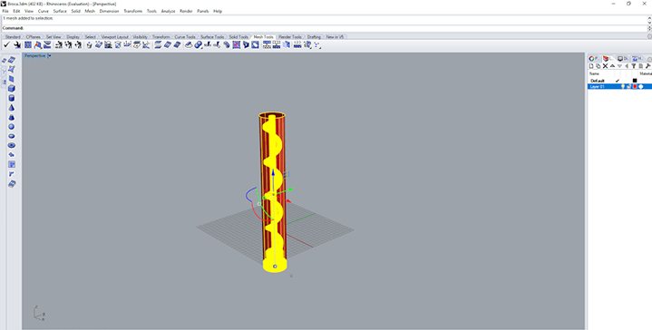

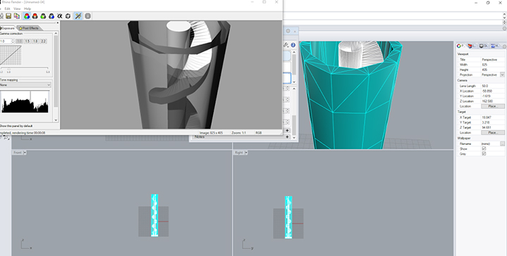
This is not a very small object but I took advantage from this assigment to build this part of my final project.
After that I saved the file to a "STL file" and I opened it in the Cura, and I also set the object to the right position (Rotated the object 90º)
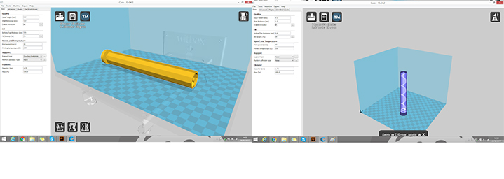
After that I chose the printer, in this case it was the Hephestes Prusa i3, and the object was grey because the dimensions were not ok, the object was oversized, so I changed the scale of the object to 0.75 in order to fit inside the machine.
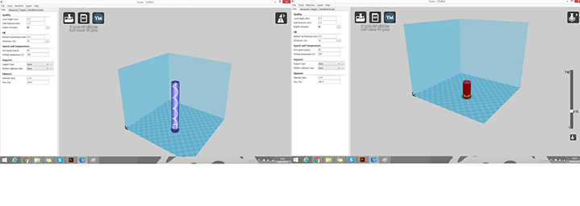
After that I'm going to click on "File" and "open file" then I selected the "documents" icon and finally chose the correct definitions input, after that I gone to "view mode" and I saw the Layers and the X.Ray.
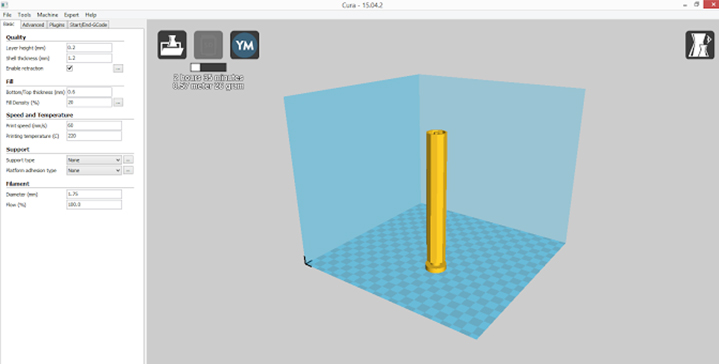
After these steps I turn on the 3D printer ( Hephestos) and I went to the SD Card to pass the file to the 3D printer.
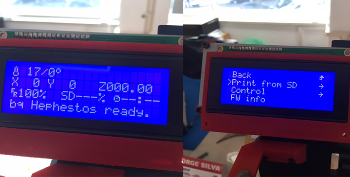
I selected the right file (Brocal1) and did OK, then I just waited until the printer had reached 220 degrees to start printing
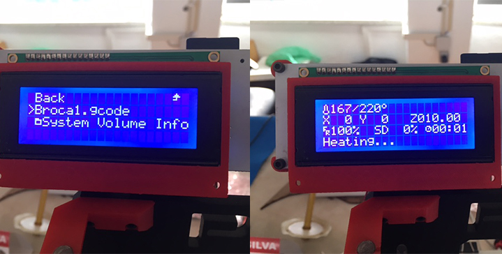
This first test did not work very well, changing the scale of the drawing was not a good idea at all.
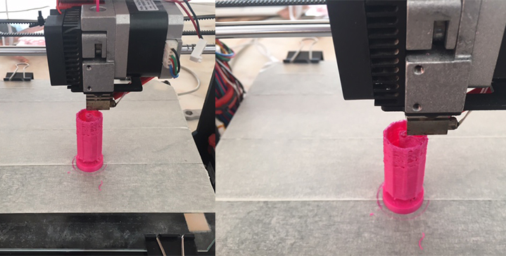
I decided to cancel the printing, because it was not going well, and also this piece takes a lot of time to print, as I had already mentioned before this is not a very small object ...
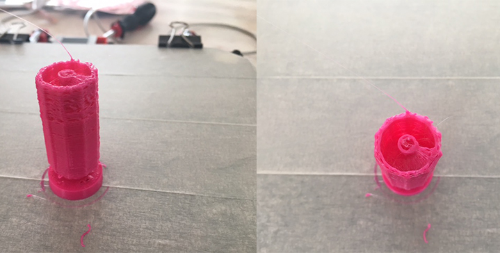
So I decided to draw a small object that could not be substractively, instead I decided to build a cube with a ball inside.
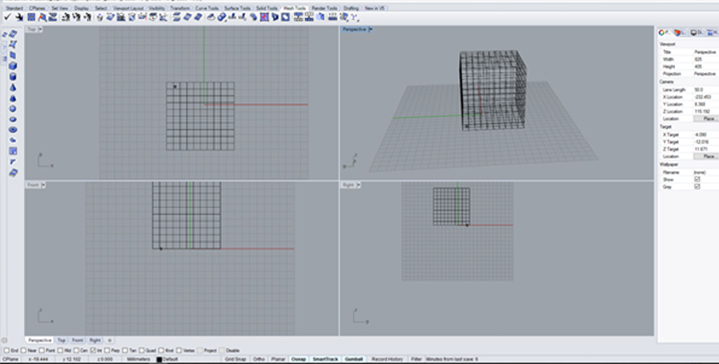
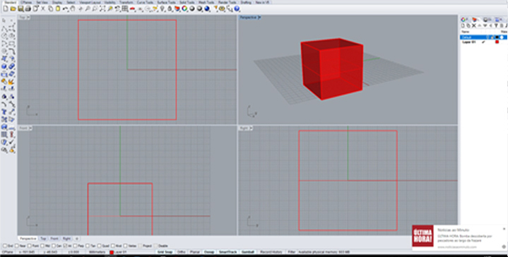
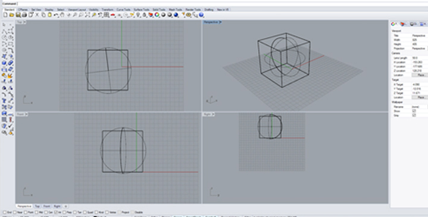
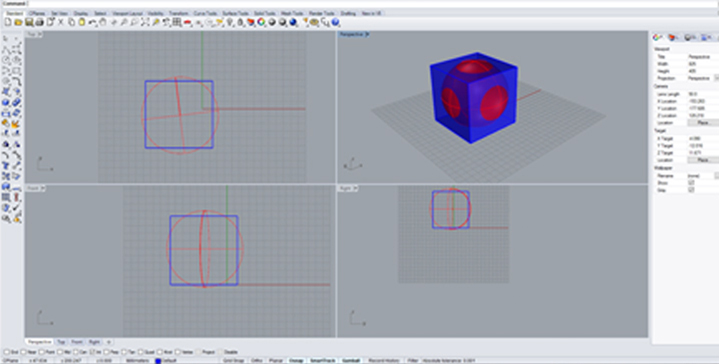
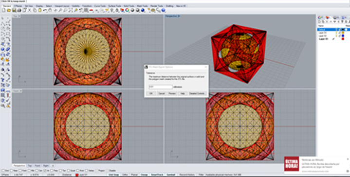
After that I saved the file to a "STL file" and I opened it in the Cura, and I repeated all the steps again
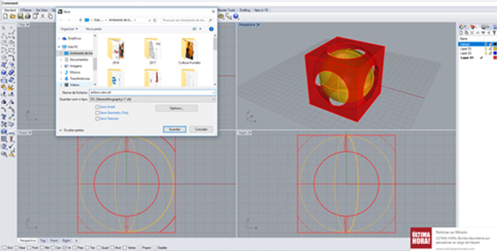
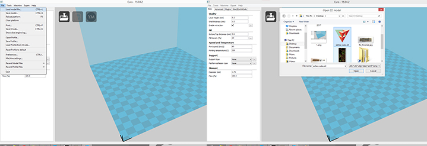
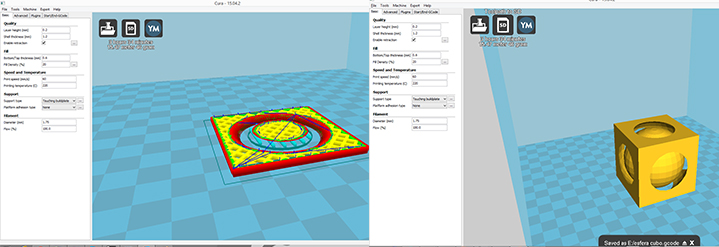
Printing again:
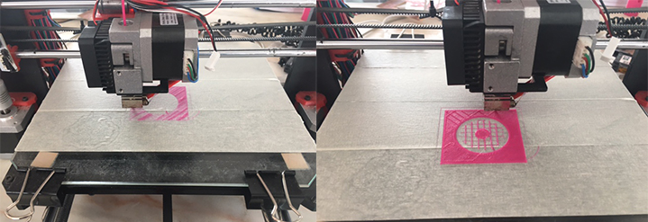
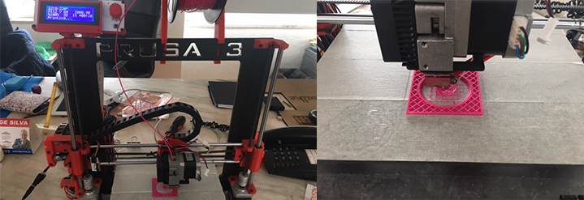
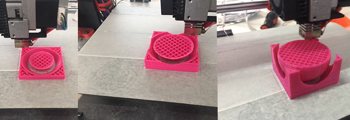
After 3 hours of printing the result is good and as we expected...
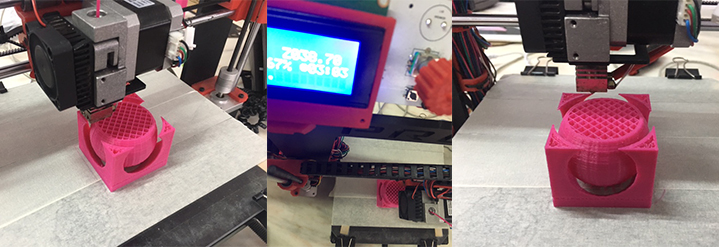
After 4.15 hours of printing the piece is finally ready, and looking good
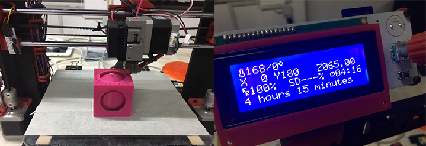
Final Result:
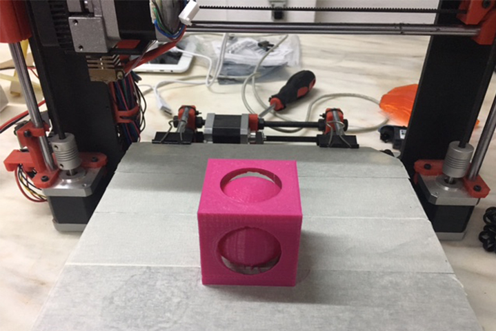
3D Scanning
For the 3D Scanning of this weeks assignment I used the Ciclop Scanner. This scan works with two laser beams and one webcam, to learn about I share this link: Ciclop.
The first step was to choose an object, and I chose a mini soccer ball.
The second step was to install ciclop software in my computer, I also Installed the Logitech camera drivers and Horus, after that I started working with Horus.
Third step It was to calibrate all the components and adjusting the image quality:
1- I adjusted the camera settings acording to the light of the Fab lab in the control workbench, I also tested the motor in the same workbench.
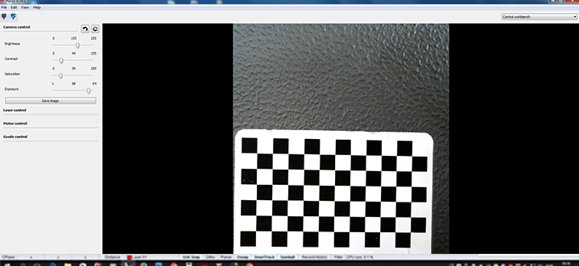
2 - I passed to calibration workbench and made a scanner autocheck, I also made a laser triangulation and I tested the platform extrinsics.
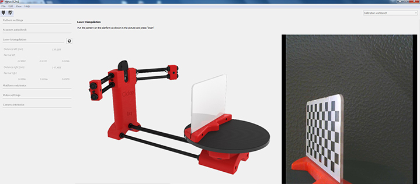
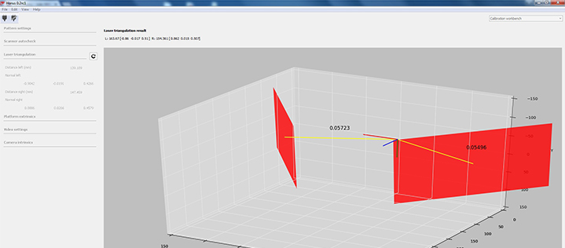
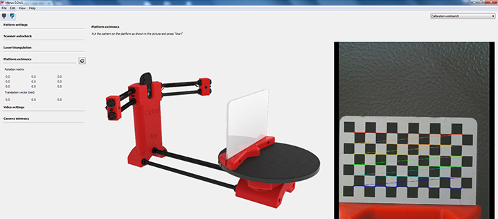
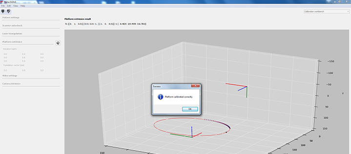
3 - Scanning process, clicking Scanning workbench
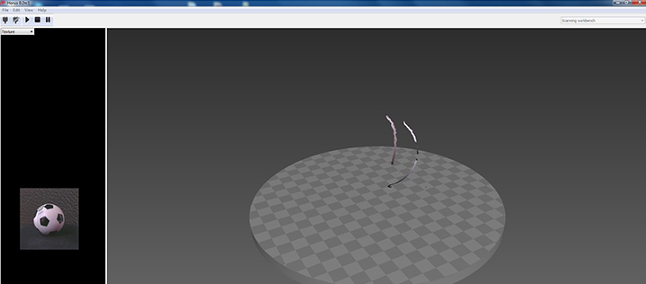
4- The final result was not too bad considering the room's luminosity
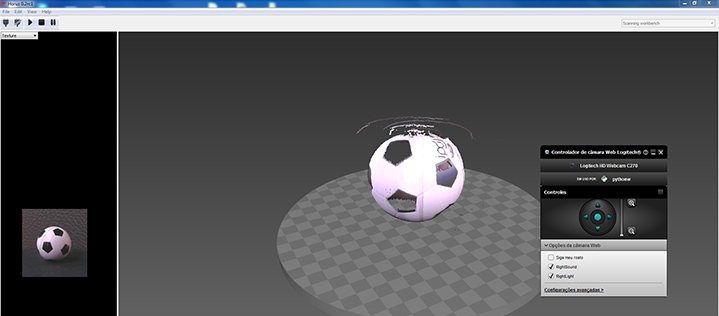
5- After Scaning I saved the file and passed to meshlab. I imported the point file created in Horus and started the filtering process.
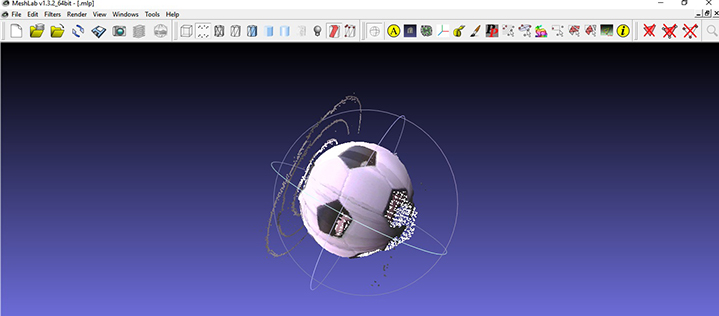
6 - I went to Filters -> Remeshing, Simplification and Reconstruction -> Surface Reconstruction: Poisson
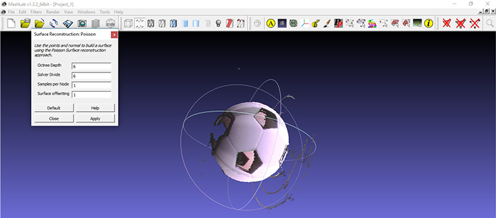
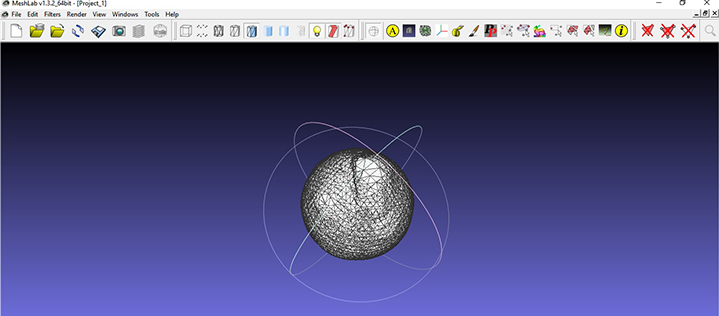
7 - Finally I exported the file to STL
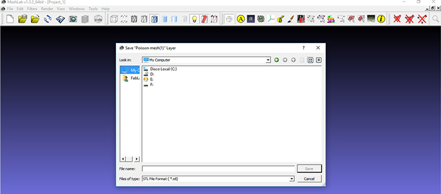
I also wanted to try a different techique as well at 3D scanning but I did not have enough time for this...
- Ball.mlp (Meshlab file)